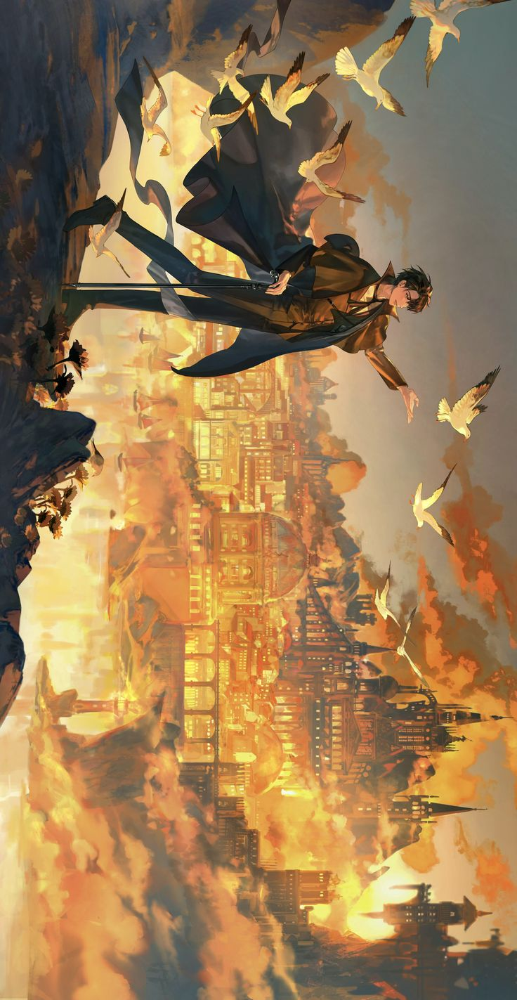

Lord of the Mysteries follows Zhou Mingrui, an ordinary man who mysteriously awakens in the body of Klein Moretti, a young man living in a strange, Victorian-inspired world filled with steam-powered machinery, religious organisations, and supernatural mysteries.